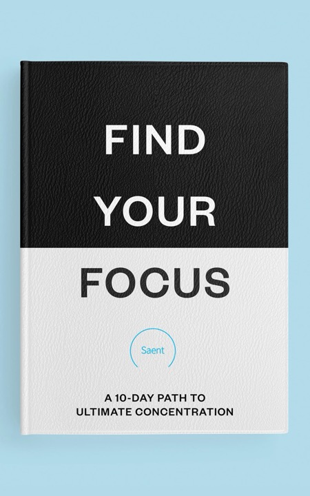

02 Basics
Focus Basics
Ten habits that do more for a draft than any tool.
Most of these sound basic, and plenty of people still haven't set them up. Tick the ones you already do, then pick one to add this week.
Multitasking test
Many people believe they multitask well. This test takes two minutes, paper, and a pen, and it shows what switching between tasks costs you.
Find Your Focus
The checklist is the short version of Find Your Focus, a book I wrote for Saent, the productivity company I ran before Animalz. It is a ten-day path to better concentration, with one short chapter and one action per day.

The ten chapters: prepare, single-task, destroy distractions, time, energize, move, recharge, tame your mind, eliminate, and train.
Download the ebookEPUB, 0.3 MB. Opens in Apple Books and other reader apps.
Next
Work rhythm